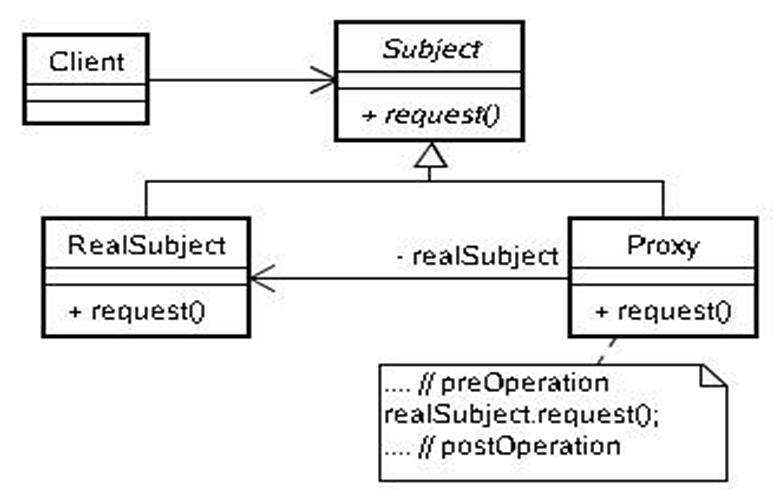

对日常在 Android 中实用设计模式进行一下梳理和总结MichaelX（xiong_it） 、菜鸟教程 、四月葡萄 、IAM四十二 等，在这里注明下~另外强烈推荐图说设计模式 ，看了一部分，有些介绍的还是很通俗易懂的。
设计模式（持续更新ing…） 单例模式 (Singleton pattern) 确保一个类只有一个实例，并且自行实例化并向整个系统提供这个实例(并提供对该实例的全局访问)
饿汉式、懒汉式名词解释： 饿汉式： 不管程序是否需要这个对象的实例，总是在类加载的时候就先创建好实例，理解起来就像不管一个人想不想吃东西都把吃的先买好，如同饿怕了一样。
1 2 3 4 5 6 7 8 9 10 11 12 13 14 /** * 饿汉式 */ public class Singleton { private static Singleton instance = new Singleton(); private Singleton() { } public static Singleton getInstance() { return instance; } }
优点：写法简单，线程安全。
缺点：没有懒加载的效果，如果没有使用过的话会造成内存浪费
懒汉式： 如果一个对象使用频率不高，占用内存还特别大，明显就不合适用饿汉式了，这时就需要一种懒加载的思想，当程序需要这个实例的时候才去创建对象，就如同一个人懒的饿到不行了才去吃东西。
1 2 3 4 5 6 7 8 9 10 11 12 13 14 15 16 17 18 19 20 21 22 23 24 25 26 27 28 /** * 懒汉式 */ public class Singleton { /** * volatile 关键字修饰的变量，一次只能有一个线程操作该变量，保证线程安全 * volatile 能够防止代码的重排序，保证得到的对象是初始化过 */ private volatile static Singleton mSingleton; private Singleton (){ } /** * 双重校验锁模式 */ public static Singleton getSingleton() { if (mSingleton == null) { // 第一次检查，避免不必要的同步 synchronized (Singleton.class) { // 同步 if (mSingleton == null) { // 第二次检查，为null时才创建实例 mSingleton = new Singleton(); } } } return mSingleton; } }
优点：懒加载，线程安全，效率较高
缺点：volatile 影响一点性能，高并发下有一定的缺陷，某些情况下 DCL 会失效，虽然概率较小
volatile 关键字修饰的变量，一次只能有一个线程操作该变量，保证线程安全。
为什么要在变量 singleton 加上 volatile 关键字？ 要理解这个问题，先要了解对象的构造过程，实例化一个对象其实可以分为三个步骤：
分配内存空间
初始化对象
将内存空间的地址赋值给对应的引用
但是由于操作系统可以对指令进行重排序，所以上面的过程也可能会变成如下过程：
分配内存空间
将内存空间的地址赋值给对应的引用
初始化对象
如果是这个流程，多线程环境下就可能将一个未初始化的对象引用暴露出来，从而导致不可预料的结果。因此，为了防止这个过程的重排序，我们需要将变量设置为volatile类型的变量。
双重校验锁中两个 if 判断的作用？ 第一：是为了提高程序的 效率，当 Singleton 对象被创建以后，再获取 Singleton 对象时就 不用去验证同步代码块的锁及后面的代码，直接返回Singleton 对象。
注意：
简单工厂模式 (Simple Factory Pattern )
更多详细介绍工程模式，可链接查看 四月葡萄
定义一个接口用于创建对象，但是让子类决定初始化哪个类。工厂方法把一个类的初始化下放到子类。
生成复杂对象时，确定只有一个工厂类，可以使用简单工厂模式。否则有多个工厂类的话，使用工厂方法模式 。
优点 代码解耦，创建实例的工作与使用实例的工作分开，使用者不必关心类对象如何创建。
缺点 违背开放封闭原则，若需添加新产品则必须修改工厂类逻辑，会造成工厂逻辑过于复杂。
Android 开发中的工厂模式实践 场景：项目中使用了 Universal Image Loader作为图片加载框架，过一段时间后，发现 UIL 已经不流行了，想用更加 fashion的 Glide 来代替 UIL，再或者有一天，Glide 不更新，也不 fashion 了… 难道又要换其他图片加载框架？难道又改吗？？？
图片加载接口
1 2 3 4 5 6 7 8 9 10 11 /** * 图片加载接口 */ public interface ImageLoaderInterf { interface CallBack { void onSuccess(Bitmap result); void onFailure(); } void load(Context context, String imgUrl, ImageView view); }
图片加载工厂类
1 2 3 4 5 6 7 8 9 10 11 12 13 14 15 16 17 18 public class ImgLoaderClientFactory { public static final GLIDE = 0; public static final UIL = 1; public static final PICASSO = 2; public static ImageLoaderInterf getImageLoaderClient(int type) { switch (type) { case GLIDE: return GlideClient.getInstance(); case UIL: return UilClient.getInstance(); default: return PicassoClient.getInstance(); } } }
UilClient：Universal Image Loader封装
1 2 3 4 5 6 7 8 9 10 11 12 13 14 15 16 17 18 19 20 public class UilClient implements ImageLoaderInterf { private static UilClient sInstance; private UilClient() {} public static UilClient getInstance() { synchronized (UilClient.class) { if (sInstance == null) { sInstance = new UilClient(); } } return sInstance; } @Override public void load(Context context, String imgUrl, ImageView view) { ImageLoader.getInstance().displayImage(imgUrl, view); } }
GlideClient：Glide的二次封装
1 2 3 4 5 6 7 8 9 10 11 12 13 14 15 16 17 18 19 public class GlideClient implements ImageLoaderInterf { private static GlideClient sInstance; private GlideClient() {} public static GlideClient getInstance() { synchronized (GlideClient.class) { if (sInstance == null) { sInstance = new GlideClient(); } } return sInstance; } @Override public void load(Context context, String imgUrl, ImageView view) { Glide.with(context).load(imgUrl).into(view); } }
PicassoClient：Picasso封装类
1 2 3 4 5 6 7 8 9 10 11 12 13 14 15 16 17 18 19 20 21 public class PicassoClient implements ImageLoaderInterf { private static PicassoClient sInstance; private PicassoClient() { } public static PicassoClient getInstance() { synchronized (PicassoClient.class) { if (sInstance == null) { sInstance = new PicassoClient(); } } return sInstance; } @Override public void load(Context context, String imgUrl, ImageView view) { Picasso.with(context).load(imgUrl).into(view); } }
那么加载图片设置就变成了下面这样：
1 ImgLoaderClientFactory.getImageLoaderClient(ImgLoaderClientFactory.UIL).load(mContext, imgUrl, imageView);
要切换图片框架呢？怎么办？可以单独写一个变量通过赋值，全局使用，或者 全局搜索替换 ImgLoaderClientFactory.UIL 也行，比如想切到Glide，将用到 ImgLoaderClientFactory.UIL 地方改成 ImgLoaderClientFactory.GLIDE 即可。
1 ImgLoaderClientFactory.getImageLoaderClient(ImgLoaderClientFactory.GLIDE).load(mContext, imgUrl, imageView);
策略模式 (Strategy pattern) 定义一组算法，将其各个封装，并且使他们有交换性
策略模式好处在于使得算法在用户使用的时候能独立的改变，单一的修改，并且有良好扩展性。
算法：指的是各个策略的实现逻辑，而非算法领域的数据算法。
优点
策略类可以互相替换
耦合度低，方便扩展
避免使用多重条件选择语句（if-else或者switch）。
缺点
策略的增多会导致子类的也会变多
客户端必须知道所有的策略类，并自行决定使用哪一个策略类。
使用场景
如果在一个系统里面有许多类，它们之间的区别仅在于它们的行为，那么使用策略模式可以动态地让一个对象在许多行为中选择一种行为。
一个系统需要动态地在几种算法中选择一种。
如果一个对象有很多的行为，如果不用恰当的模式，这些行为就只好使用多重的条件选择语句来实现。
UML 类图
策略模式各角色讲解： Strategy： 策略基类（接口或者抽象类再或者抽象策略类），定义子策略需要实现的方法，比如 algorithm()，该方法取决于客户端代码（高层代码）需要该策略实现什么功能，子类则实现该方法，封装自己的算法，供外部调用。Context： 此 Context，非彼（Android中的）Context，它持有 Strategy 真实的实例对象，提供给客户端调用 Strategy 时的上下文调度者。ConcreteStrategyA： 实现父类 Strategy 的方法，封装自身算法逻辑。ConcreteStrategyB： 同上
例子： 一个加减乘除的策略，定义一个 Strategy 接口，然后针对接口实现对应的加减乘除的实体策略类。
android 中的策略模式应用实践：
以下是大致实现：
PayActivity：客户端角色，支付方式选择界面
AbsPayStrategy：作为支付策略基类，定义了一个pay方法
PayContext：上下文角色，用来封装支付AbsPayStrategy对象
WeChatPayStrategy：封装了微信支付算法逻辑
ALiPayStrategy：封装了支付宝支付算法逻辑
BankCardPayStrategy：封装了银行卡支付算法逻辑
支付功能的示意代码：AbsPayStrategy的实际实现应该为抽象类，它需要持有Activity对象。
1 2 3 4 5 public interface AbsPayStrategy { // private Activity mActivity; // 本策略主要就是实现支付功能 void pay(); }
Context 上下文角色
1 2 3 4 5 6 7 8 9 10 11 public class PayContext { private AbsPayStrategy mPayStrategy; public PayContext(AbsPayStrategy payStrategy) { mPayStrategy = payStrategy; } public void pay() { mPayStrategy.pay(); } }
微信支付策略实现
1 2 3 4 5 6 7 8 9 /** * 微信支付策略 */ public class WeChatPayStrategy implements AbsPayStrategy { public void pay() { // 此处封装微信支付逻辑 } }
支付宝支付策略实现
1 2 3 4 5 6 7 8 9 /** * 支付宝支付策略 */ public class ALiPayStrategy implements AbsPayStrategy { public void pay() { // 此处封装支付宝支付逻辑 } }
具体的客户端代码，此处为PayActivity
1 2 3 4 5 6 7 8 9 10 11 12 13 14 15 16 17 18 19 20 21 22 23 24 public class PayActivity extends Activity implements View.OnclickListener{ private PayContext mPayContext; @Override public void onClick(View view) { switch(v.getId()) {// 客户端来决定使用哪种支付策略 case R.id.wechat_pay: mPayContext = new PayContext(new WechatPayStrategy()); break; case R.id.wechat_pay: mPayContext = new PayContext(new ALiPayStrategy()); break; case R.id.wechat_pay: mPayContext = new PayContext(BankCardPayStrategy()); break; default: mPayContext = new PayContext(new WechatPayStrategy()); break; } // 利用实际的支付策略对象进行支付 mPayContext.pay(); } }
这样就实现了一个 app 内的支付功能，如果微信支付出现问题了，改动微信支付策略代码，支付宝支付出现问题，改动想要实现即可，职责单一。
观察者模式 (Observer pattern) 定义 定义对象间的一种一对多依赖关系，使得每当一个对象状态发生改变时，其相关依赖对象皆得到通知并被自动更新。
介绍 观察者模式属于（对象）行为型模式。
优点 解除观察者与主题之间的耦合。让耦合的双方都依赖于抽象，而不是依赖具体。从而使得各自的变化都不会影响另一边的变化。
缺点 依赖关系并未完全解除，抽象主题仍然依赖抽象观察者。
UML
策略模式各角色说明： Subject（抽象主题）： 又叫抽象被观察者，把所有观察者对象的引用保存到一个集合里，每个主题都可以有任何数量的观察者。抽象主题提供一个接口，可以增加和删除观察者对象。ConcreteSubject（具体主题）： 又叫具体被观察者，将有关状态存入具体观察者对象；在具体主题内部状态改变时，给所有登记过的观察者发出通知。Observer (抽象观察者): 为所有的具体观察者定义一个接口，在得到主题通知时更新自己。ConcrereObserver（具体观察者）： 实现抽象观察者定义的更新接口，当得到主题更改通知时更新自身的状态。
java 代码实现 创建抽象观察者 1 2 3 4 5 6 7 8 9 10 11 /** * TODO Observer (抽象观察者):为所有的具体观察者定义一个接口，在得到主题通知时更新自己。 * 定义一个接到通知的更新方法，即收件人收到通知后的反应 * * @author dev.liang <a href="mailto:dev.liang@outlook.com">Contact me.</a> * @version 1.0 * @since 2019/03/24 16:29 */ public interface Observer { void update(String msg); }
创建具体观察者 1 2 3 4 5 6 7 8 9 10 11 12 13 14 15 16 17 18 19 20 /** * TODO （具体观察者）：实现抽象观察者定义的更新接口，当得到主题更改通知时更新自身的状态。 * * @author dev.liang <a href="mailto:dev.liang@outlook.com">Contact me.</a> * @version 1.0 * @since 2019/03/24 16:55 */ public class ConcreteObserver implements Observer { String mObserverName; public ConcreteObserver(String mObserverName) { this.mObserverName = mObserverName; } @Override public void update(String msg) { System.out.println("具体观察者" + mObserverName + ",收到了信息:" + msg); } }
创建抽象主题 1 2 3 4 5 6 7 8 9 10 11 12 13 14 15 16 17 18 19 20 21 22 23 24 25 26 27 28 29 30 31 32 33 34 /** * TODO * Subject（抽象主题）： * 又叫抽象被观察者，把所有观察者对象的引用保存到一个集合里， * 每个主题都可以有任何数量的观察者。 * 抽象主题提供一个接口，可以增加和删除观察者对象。 * * @author dev.liang <a href="mailto:dev.liang@outlook.com">Contact me.</a> * @version 1.0 * @since 2019/03/24 16:11 */ public interface Subject { /** * 添加观察者 * * @param observer */ void attach(Observer observer); /** * 删除观察者 * * @param observer */ void detach(Observer observer); /** * 通知观察者 * * @param msg */ void notify(String msg); }
创建具体主题 1 2 3 4 5 6 7 8 9 10 11 12 13 14 15 16 17 18 19 20 21 22 23 24 25 26 27 28 29 30 31 32 33 34 /** * subscribe * TODO ConcreteSubject（具体主题）： * 又叫具体被观察者，将有关状态存入具体观察者对象； * 在具体主题内部状态改变时，给所有登记过的观察者发出通知. * * @author dev.liang <a href="mailto:dev.liang@outlook.com">Contact me.</a> * @version 1.0 * @since 2019/03/24 16:34 */ public class ConcreteSubject implements Subject{ private List<Observer> observerList = new ArrayList(); @Override public void attach(Observer observer) { observerList.add(observer); } @Override public void detach(Observer observer) { observerList.remove(observer); } @Override public void notify(String msg) { /*循环通知收件人（观察者）*/ if(!CollectionUtils.isEmpty(observerList)) { for (Observer observer : observerList) { observer.update(msg); } } } }
测试 1 2 3 4 5 6 7 8 9 10 11 12 13 public class ObserverTest { public static void main(String[] str) { ConcreteSubject concreteSubject = new ConcreteSubject(); Observer observerLiang = new ConcreteObserver("老梁"); Observer observerWang = new ConcreteObserver("老王"); concreteSubject.attach(observerLiang); concreteSubject.attach(observerWang); concreteSubject.notify("今天发工资~"); /*老梁没发工资*/ concreteSubject.detach(observerLiang); concreteSubject.notify("发了工资~"); } }
打印 1 2 3 具体观察者老梁,收到了信息:发工资啦~ 具体观察者老王,收到了信息:发工资啦~ 具体观察者老王,收到了信息:发了工资~
Android 中的观察者模式 控件中Listener监听方式 Adapter的notifyDataSetChanged()方法 BroadcastReceiver BroadcastReceiver 作为 Android 的四大组件之一,实际上也是一个典型的观察者模式.通过 sendBroadcast 发送广播时,只有注册了相应的 IntentFilter 的 BroadcastReceiver 对象才会收到这个广播信息,其onReceive方法才会被调起。
为目标对象提供一种代理，客户端通过代理去访问目标对象。
前提： 如果从写代码的角度出发，当我们遇到以下场景：
无法直接访问某个对象
不想直接访问某个对象
访问某个对象存在困难
的时候，我们就可以通过一个代理，通过它来间接访问真正的对象。
UML 图 
从代理模式的 UML 类图中，我们可以得到如下结论：
代理对象和委托对象需要实现相同的接口（抽象类）;
代理对象持有委托对象的引用;
可以看到，代理模式非常简洁，总共就三个角色，包括抽象主题，委托者和代理者。用代码实现以下代理模式。
1 2 3 4 5 6 7 8 9 10 11 12 13 14 15 16 17 18 19 20 21 22 23 24 25 26 27 28 29 30 31 32 33 34 35 36 37 38 39 40 41 public interface Subject { void doSomething(); } /** * 委托类 */ public class RealSubject implements Subject { @Override public void doSomething() { System.out.println("This is real doSomeThing"); } } /** * 代理类 */ public class ProxySubject implements Subject { private Subject mSubject; // 代理类持有委托类的引用 public ProxySubject(Subject realSubject) { mSubject = realSubject; } @Override public void doSomething() { mSubject.doSomething(); } } public class Client { public static void main(String[] args) { //创建委托类 Subject mRealSubject=new RealSubject(); //创建代理类 ProxySubject mProxy = new ProxySubject(mRealSubject); //由代理类去做具体的操作 mProxy.doSomething(); } }
可以看到 RealSubject 和 ProxySubject 都实现了接口 Subject。在客户端使用ProxySubject 的实例调用 doSomething() 方法，而不是使用 RealSubject 的实例来实现。
你可能会好奇，这么做的意义是什么呢？直接用 RealSubject 的实例来调用 doSomething 方法不也可以吗？何必多此一举。试想，如果现在有很多个委托类，他们各自的实现都不同，客户端只关心doSomething 的调用，而不关心具体的实现，这样代理类就可以在其内部屏蔽委托类之间的差异了，这也是客户端不想关注的事情。
动态代理 以上的分析中，代理类是由我们直接创建好的；现实中可能还有这样一种场景，代理类并不是在程序编译的时候创建，而是在运行的过程中通过Java的反射机制动态的进行创建，这样的代理模式成为动态代理，对应的之前我们所说的就是静态代理了。
其实，动态代理的实现没有什么可说的，说白了都是模板代码，Java为开发者提供了InvocationHandler,实现该接口重写其invoke 方法即可。
代码示例可在 Github
在 Android 中，关于动态代理的使用，最经典的就是 Retrofit 了。这里可以简单看一下。
1 2 3 4 5 6 7 8 9 /** * 声明自己的网络请求接口 */ public interface GithubService { @GET("/users/leaderliang/repos") Call<List<Repo>> getUserRepos(); }
初始化 Retrofit，发起网络请求
1 2 3 4 5 6 7 8 9 10 11 12 13 14 15 16 17 18 Retrofit retrofit = new Retrofit.Builder() .baseUrl("https://api.github.com") .addConverterFactory(GsonConverterFactory.create()) .build(); GithubService mGithubService = retrofit.create(GithubService.class); Call<List<Repo>> repos = mGithubService.getUserRepos(); repos.enqueue(new Callback<List<Repo>>() { @Override public void onResponse(Call<List<Repo>> call, Response<List<Repo>> response) { System.out.println(response.code() + " " + new Gson().toJson(response.body())); } @Override public void onFailure(Call<List<Repo>> call, Throwable t) { Toast.makeText(MainActivity.this, "onFailure", Toast.LENGTH_SHORT).show(); } });
上面代码使用过 Retrofit 的应该熟悉吧。当我们用 Retrofit 实例，调用其 create 方法时，发现就已经帮我们做好了 GithubService 的实现，发生了什么呢？下面是 creat 示例代码：
1 2 3 4 5 6 7 8 9 10 11 12 13 14 15 16 17 18 19 20 21 22 23 24 public <T> T create(final Class<T> service) { Utils.validateServiceInterface(service); if (validateEagerly) { eagerlyValidateMethods(service); } // new Class<?>[] { service } 声明了 service，但是我们需要知道这个过程是怎么去实现的。 return (T) Proxy.newProxyInstance(service.getClassLoader(), new Class<?>[] { service }, new InvocationHandler() { private final Platform platform = Platform.get(); private final Object[] emptyArgs = new Object[0]; @Override public Object invoke(Object proxy, Method method, @Nullable Object[] args) throws Throwable { // If the method is a method from Object then defer to normal invocation. if (method.getDeclaringClass() == Object.class) { return method.invoke(this, args); } if (platform.isDefaultMethod(method)) { return platform.invokeDefaultMethod(method, service, proxy, args); } return loadServiceMethod(method).invoke(args != null ? args : emptyArgs); } }); }
create（） 方法里的
1 return (T) Proxy.newProxyInstance(service.getClassLoader(), new Class<?>[] { service }, new InvocationHandler() {});
实际体现的就是动态代理的整个过程，这个 return 就相当于动态创建了 ProxyService 这个代理类，写一段伪代码，应该可以帮助进一步理解了：
1 2 3 4 5 6 7 8 9 10 11 12 13 14 15 16 17 18 19 20 21 22 23 24 25 26 27 28 29 30 31 32 33 34 35 36 37 38 39 40 41 42 43 public class ProxyService implements GithubService { InvocationHandler invocationHandler = new InvocationHandler() { private final Platform platform = Platform.get(); private final Object[] emptyArgs = new Object[0]; @Override public Object invoke(Object proxy, Method method, @Nullable Object[] args) throws Throwable { // If the method is a method from Object then defer to normal invocation. if (method.getDeclaringClass() == Object.class) { return method.invoke(this, args); } if (platform.isDefaultMethod(method)) { return platform.invokeDefaultMethod(method, service, proxy, args); } return loadServiceMethod(method).invoke(args != null ? args : emptyArgs); } }; @Override public Call<List<Repo>> getUserRepos() { try { Method method = GithubService.class.getMethod("getUserRepos"); return (Call<List<Repo>>) invocationHandler.invoke(this, method, null); } catch (NoSuchMethodException e) { e.printStackTrace(); } catch (Throwable throwable) { throwable.printStackTrace(); } return null; } /** * 其他接口 */ @Override public Call<User> getOtherMethod(){ //... return ...; } }
可以看到，这里就是一个典型的动态代理实现，通过serviceMethod.callAdapter.adapt返回了一个service对象的代理对象，在上面的例子里，就是返回了一个GitHubService的代理对象，这样我们就可以通过这样一个对象去调用GitHubService中定义好的各种网络请求，而不用在使用的时候再去决定是POST请求还是GET请求,参数是放在Body里还是params里，因为Retrofit 通过把反射注解和动态代理的巧妙结合，屏蔽了复杂的参数拼接操作，把所有我们需要对OKHttp的进行传递的参数，动态的帮我们传递了，一旦在接口中定义好了使用方式，就可以非常方便的获取到okhttp中最关键的Call了，有了Call我们就可以通过execute或者是enqueue发起网络请求了。
以上就是对代理模式的分析，总的来说代理模式的结构非常简单；包括抽象主题，委托类，代理类三个核心角色，从大的方向上可以分为静态代理和动态代理两大类；通过静态代理的方式，在开发迭代的过程中，为实现兼容性提供了一种非常友好的实现思路；在日常开发中，如果我们使用的对象之间有着强烈的耦合，可是思考一下是否可以通过代理模式解耦；同时，当我们需要扩展某个类的部分功能时，但又不想去破坏原有的功能或者是根本无法修改时，我们可以考虑代理模式，但也要明白，通过代理模式我们能做的也只能是功能扩展，想要更新委托类中已经实现的内容他是无能为力的。
动态代理，可以根据运行时的委托类动态的生成代理类，这样就减轻了代理类的负担，避免在编码阶段就具体的委托类再做各种判断了。
代理模式很简单，也很实用，但不要忘记代理类和委托类需要实现功能的接口或抽象类，不要忽略了这一点。
参考链接：https://juejin.im/post/5a4e4725f265da3e2c37e36e